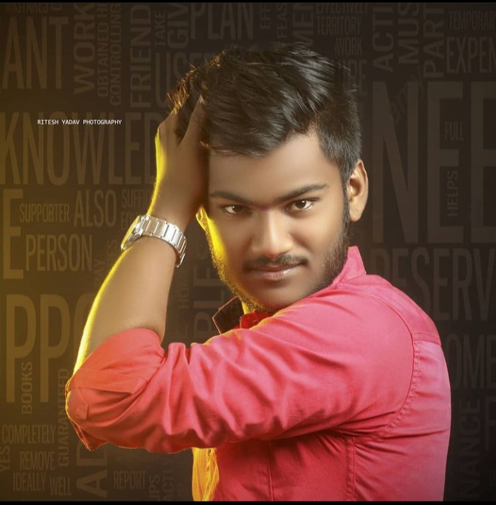

am a person who is positive about every aspect of life. There are many things I like to do, to see, and to experience. I like to read, I like to write; I like to think, I like to dream; I like to talk, I like to listen. I like to see the sunrise in the morning, I like to see the moonlight at night; I like to feel the music flowing on my face, I like to smell the wind coming from the ocean. I like to look at the clouds in the sky with a blank mind, I like to do thought experiment when I cannot sleep in the middle of the night. I like flowers in spring, rain in summer, leaves in autumn, and snow in winter. I like to sleep early, I like to get up late; I like to be alone, I like to be surrounded by people. I like country’s peace, I like metropolis’ noise; I like the beautiful west lake in Hangzhou, I like the flat cornfield in Champaign. I like delicious food and comfortable shoes; I like good books and romantic movies. I like the land and the nature, I like people. And, I like to laugh. Authenticity: I am someone who values being genuine and true to oneself. As mentioned in one of the snippets, “Life is short and everyone has something that they are passionate about. Be able to say that you didn’t let fear hold you back.” Empathy: I understand the importance of doing small things for others with great love, as quoted by Mother Teresa, and strive to make a positive impact on those around me. Self-awareness: I recognize the significance of knowing and writing about oneself, acknowledging that “we often think and write about others, whether relatives or friends or any other famous personality. In such a case, we forget to write about ourselves.” Creativity: I appreciate the value of writing and expression, as seen in the snippet about writing an autobiography and the importance of having a unique voice.
Project 2025 is a proposed presidential transition project that is composed of four pillars: a policy guide for the next presidential administration; a LinkedIn-style database of personnel who could serve in the next administration; training for that pool of candidates dubbed the "Presidential Administration Academy;" and a playbook of actions to be taken within the first 180 days in office. It is led by two former Trump administration officials: Paul Dans, who was chief of staff at the Office of Personnel Management and serves as director of the project, and Spencer Chretien, former special assistant to Trump and now the project's associate director.
Candidates interested in applying for the Heritage Foundation's "Presidential Personnel Database" are vetted on a number of political stances, such as whether they agree or disagree with statements like "life has a right to legal protection from conception to natural death," and "the President should be able to advance his/her agenda through the bureaucracy without hindrance from unelected federal officials." The contributions from ex-Trump administration officials have led its critics to tie Project 2025 to his reelection campaign, though the former president has attempted to distance himself from the initiative.